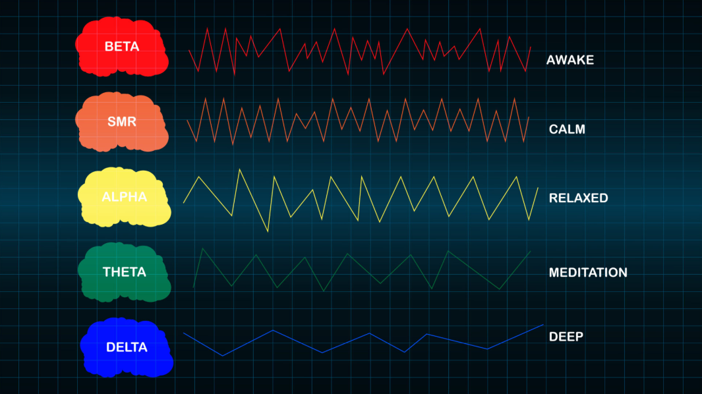

Pozornost
Podpora pri boljši osredotočenosti, mentalni jasnosti in stabilnejšem delovanju uma.

Učenje samoregulacije
Podporni tehniki za opazovanje, trening in uravnavanje odzivov živčnega sistema, pozornosti, sproščanja in notranjega ravnovesja.
Quantum Health
Neurofeedback in biofeedback pomagata opazovati odzive telesa ter živčnega sistema. Namen je boljše zavedanje, več notranje stabilnosti in postopno učenje regulacije brez pritiska.
Možganski valovi
Tehniki se povezujeta z razumevanjem možganskih valov, odzivov telesa in ravnovesja med aktivnostjo ter sproščenostjo. Cilj ni prisila, ampak trening odzivov skozi povratno informacijo.

Namen tehnike je podpreti bolj usklajeno delovanje uma: več pozornosti, več miru in manj avtomatskega odzivanja na stres.
Neurofeedback in biofeedback se uporabljata kot orodji za razvoj uma, notranje stabilnosti in boljšega stika s telesnimi odzivi. Človek lažje spremeni nekaj, kar lahko opazuje.
Pri takšnem pristopu se spremljajo odzivi živčnega sistema, sproščanje, pozornost, napetost in sposobnost vračanja v ravnovesje. Cilj je, da posameznik postopoma razvije več nadzora nad svojim notranjim stanjem.
Področja podpore
Podpora pri boljši osredotočenosti, mentalni jasnosti in stabilnejšem delovanju uma.
Podpora telesu pri umirjanju, zmanjšanju napetosti in prehodu v mirnejše stanje.
Učenje prepoznavanja odziva na stres in postopno vračanje v ravnovesje.
Podpora pri občutku miru, regulaciji in boljšem stiku s telesom.
Svetloba, zvok in povratna informacija
Originalni opis metode poudarja uporabo svetlobe, zvoka in frekvenčnih dražljajev, ki naj bi pomagali pri sprostitvi, uravnoteženju možganske aktivnosti in občutku večje umirjenosti.
Tehnika je zasnovana kot podpora pri preklopu iz odziva »boj ali beg« v stanje, kjer je telo bolj sproščeno, um pa bolj zbran in stabilen.
Kako poteka
Najprej se razjasni cilj: stres, koncentracija, sproščanje, spanje ali notranja stabilnost.
Med obravnavo se spremljajo odzivi telesa oziroma živčnega sistema.
S povratno informacijo se postopoma razvija več zavedanja in občutka za samoregulacijo.
Učinek pristopa
Podpora pri jasnosti, zbranosti, mentalni organiziranosti in boljšem fokusu.
Podpora pri ustvarjalnosti, širšem pogledu in bolj fleksibilnem razmišljanju.
Podpora sprostitvenemu odzivu in zmanjšanju občutka notranje napetosti.
Ko je um bolj miren in zbran, posameznik lažje sledi svojim ciljem.
Prijava
Pošljite osnovne podatke in kratek opis želje.